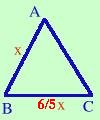
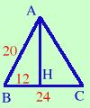

|
In un triangolo isoscele la base e' 6/5 del lato e la somma dei 2/3 della base e dei 4/5 del lato e' cm 32. Calcolare il perimetro e l'area  Come problema e' abbastanza semplice, basta ricordare che il triangolo isoscele ha 2 lati uguali Scrivo i dati BC = 6/5 AB 2/3 BC + 4/5 AB = 32 cm Ho due relazioni, una mi serve per mettere la x e l'altra per risolvere il problema. Potrei anche risolvere il problema con un sistema, in questo caso basta sostituire x e y ai segmenti coinvolti nelle relazioni So che la base e' 6/5 del lato, allora se chiamo il lato x la base sara' 6/5 x AB = x BC = 6/5 x Sostituisco nella seconda relazione 2/3 ·( 6/5 x ) + 4/5 x = 32 Di solito, per semplicita', nei problemi grandezze quali metri o centimetri si mettono solo nelle condizioni iniziali e nei risultati, mentre nello sviluppo delle equazioni si trascurano. Invece non e' possibile trascurare un parametro come ad esempio perimetro = 4a, in questo caso la a deve essere presente in tutto lo sviluppo del problema Ora sviluppo l'equazione 2 6 4 --- · --- x + --- x = 32 3 5 5 Se vuoi vedere tutti i passaggi 4 4 --- x + --- x = 32 5 5 m.c.m. = 5 4x + 4x 160 ---------- = ----- 5 5 4x + 4x = 160 8x = 160 x = 160/8 = 20 Quindi AB = 20 cm BC = 6/5 · 20 cm = 24 cm Il problema non e' finito: devo trovare il perimetro e l'area Il perimetro e' semplice da trovare perche' essendo il triangolo isoscele conosco la misura dei tre lati: AB = AC =20 cm BC = 24 cm Perimetro = AB + BC + AC = (20 + 24 + 20 ) cm = 64 cm  Per quanto riguarda l'area so che l'area di un triangolo e' base per altezza fratto due quindi devo trovare l'altezza AH Posso utilizzare il teorema di Pitagora sul triangolo ABH per trovare AH Teorema di Pitagora AB2 = AH2 + BH2 Ricavo AH AH2 = AB2 - BH2 AH = = Quindi Area = (AB · AH) /2 = (24 · 16)/2 = 192 cm2 Senza scomodare il teorema di Pitagora si poteva usare in questo caso la terna pitagorica 3 - 4 - 5 |